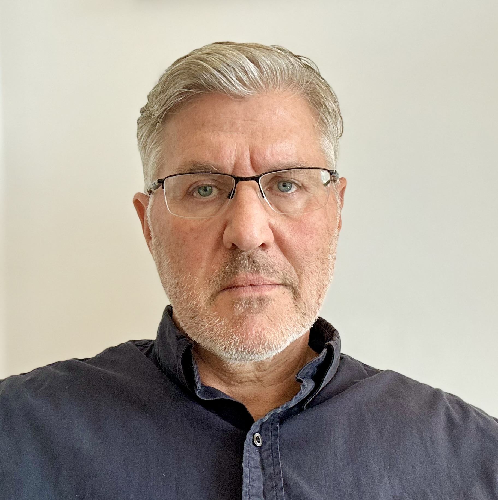

Robert S. (Rob) Jenkins
Political Scientist and Author
Rob Jenkins is Professor of Political Science at Hunter College and The Graduate Center, City University of New York, and a faculty associate at the Roosevelt House Public Policy Institute's Human Rights Program. His research addresses three main areas: post-conflict peacebuilding and the role of the United Nations; governance reform and rights-based approaches to development; and Indian politics, including the role of business in policymaking.
He is currently completing United States of the World: American Movements for World Government at the Dawn of Decolonization, and a book manuscript with Anne Marie Goetz on the politics of peacebuilding in the Philippines.
Professional Profile
Academic Appointments
- 2008–present: Professor of Political Science, Hunter College & The Graduate Center, City University of New York
- 2001–2008: Professor of Political Science, University of London
- 1995–2001: Lecturer & Sr. Lecturer, Department of Politics & Sociology, Birkbeck College, University of London
Education
- D.Phil., 1998, Institute of Development Studies, University of Sussex
- AB, 1989, Harvard College, Department of Government
Fellowships & Affiliations
- Visiting Professor, École des Hautes Études en Sciences Sociales, Paris (Jan 2013)
- Sr Fellow/Assoc. Director, Ralph Bunche Institute for International Studies, Graduate Center, CUNY (2007–2012)
- Consultant, UN Secretariat (PBSO); Lead Author, Report of the Secretary-General on Women’s Participation in Peacebuilding (S/2010/466)
- Non-Resident Research Associate, Center for the Advanced Study of India, University of Pennsylvania (2007–08)
- Fellow, Dorothy & Lewis B. Cullman Center for Scholars & Writers, New York Public Library (2005–06)
- Visiting Professor, Poverty Research Unit, School of African & Asian Studies, University of Sussex (2002–03)
- Visiting Fellow, Development Policy Research Centre, University of Cape Town (Spring 1997)
- Visiting Researcher, Institute of Development Studies, Jaipur, India (1993–94)
Grants, Commissioned Research & Consulting
- UK Research and Innovation, “Governance & Gender-Equality in Conflict-Affected Countries (The Philippines & Sri Lanka),” Co-I (2020–2024)
- “Governance Regimes & Women’s Claims-Making,” UN Research Institute on Social Development, Co-I (2014–15)
- “Women, Peace and the United Nations Security Council,” Roosevelt Institute, Co-I (2014–15)
- “Democratic Emerging Powers and the International Human Rights Agenda,” Friedrich Ebert Stiftung, PI (2012–13)
- Freedom House, New York — South Asia Consultant (Oct 2012–March 2013)
- Ford Foundation, “The Politics of India’s Special Economic Zones,” Co-director (2009–2013)
- Economic and Social Research Council (UK), “Transparency, Accountability & India’s NREGA,” PI (2008–12)
- Economic and Social Research Council (UK), “UN Reform & the Rebuilding of Failed States,” PI (2006–07)
- DFID, “Linking the WTO to the Poverty-Reduction Agenda,” PI (2001–03)
- DFID, “State Responsiveness to Poverty in India, Ghana and Uganda,” Co-I (2002–03)
- Ford Foundation, “Grassroots Anti-Corruption Initiatives & the Right to Information Movement in India,” Co-I (1998–2000)
- DFID, “Grassroots Anti-Corruption Initiatives & the Right to Information Movement in India,” Co-I (1999–2001)
- Economic and Social Research Council (UK), “A Comparative Analysis of India’s Anti-Corruption Movements,” Co-I (2000–2002)
- British Academy & CNRS (France), “The Role of Subnational Regions in Adapting to Economic Change,” Co-I (1999–2002)
- Overseas Development Administration (UK), “The Political Implications of Economic Reform in India,” PI (1993–97)
- Fixed-term consulting work: World Bank, UNDP, UNESCO, US State Department, Economist Intelligence Unit, Oxfam, OSI, Luce, etc.